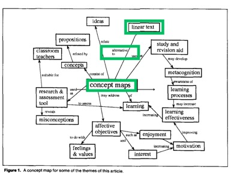
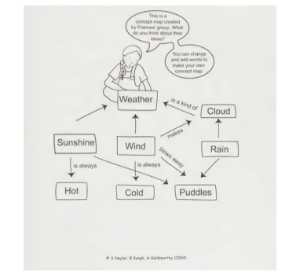
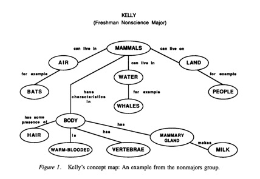
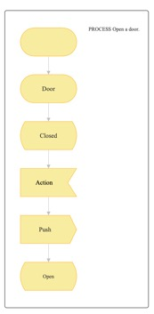
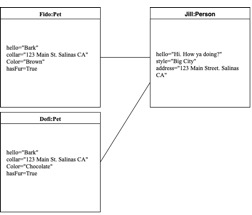
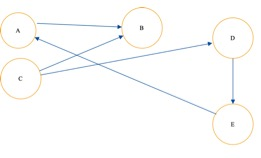
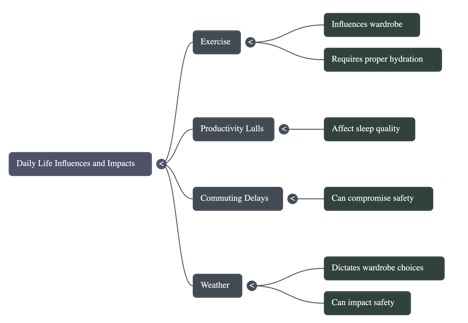

IDD Needs Assessment Worksheet
Brief Introductory Info
Your Name |
Noah S. Kevy |
Your IDD Topic |
Concept Maps |
Organization (Where the learning solution will be implemented) |
California State University Monterey Bay |
Learners (Target Audience—it’s possible that you’ll have both a primary audience and a secondary audience) |
Primary Audience: Undergraduate students Secondary Audience(s): First-year undergraduate students and Graduate Students |
An Introductory Note
A concept map is the visual display of declarative knowledge that both delays comprehension and organizes knowledge into a recognizable pattern by leveraging visual syntax (e.g. lines and shapes). Distinct concepts are related within propositions, defining the content of a concept map. Hence, concept mapping activities are leveraged by instructors and educators, creating a powerful instructional technique.
Concept maps have been utilized to assess "meaningful" propositions, aiding understanding of curriculum (Markham et al., 1994, p. 92). Universal Design for Learning advocates for multiple representations of instructional content, including those formats that emphasize pattern recognition (Sewell et al., 2022, p. 366). Also, if instructors encourage cross-curricular or even extra-curricular connections during concept mapping activities, then an affective impact might be observed. Taber (1994) has observed that students enjoy integrating subject matter into their world view (p. 279). The acquisition of concept mapping will enrich CSUMB's community of scholarship, improving the diversity of thought, contributing to the pursuit of student success.
Data Collection
First Source
Because concept maps are commonly used during pre-writing, undergraduate students might have had some experience with concept maps (Mustika et al., 2025). A survey will be my first source of information, asking undergraduate students about their prior knowledge of concept mapping activities. I will write a Google Survey asking undergraduates about their prior knowledge of concept mapping. For example, do you know what a concept map is? Also, I will ask about other kinds of knowledge mapping. Demographic information, like age or personal characteristics, will be collected as well.
Second Source
A literature review and a brief review of the history of knowledge mapping will be conducted. I will collect at least five sources which will inform my understanding of the present state of research on concept mapping, specifically. Also, my sources will help me distinguish concept maps from other kinds of knowledge maps (namely mind maps or argument maps). The historical review will place these instructional techniques in educational contexts. I will collect at least three sources related to the history of concept maps. Finally, I will select at least one study on which I can model my research-based capstone.
Third Source
California State University Monterey Bay (CSUMB) continues to promote student success. Faculty and staff are committed, providing undergraduate students the resources and support that they need. I will review CSUMB’s mission statements that describe success. As well, I will work with the Instructional Science and Technology (MIST) program faculty. Specifically, Dr. Lara may advise my research. I will ask him about the instructional techniques that are practiced. And I will ask about any past projects that attempted to garner adoption for an instructional technique.
Problem or Opportunity
Here’s Where We’d Like to Be (A More Ideal State)
The vast majority of undergraduate students (if not all undergraduate students) should achieve degrees in their chosen field of study. As such, the 3-year retention rate should be near 100 percent, reflecting the annual success of undergraduate students at CSUMB.
Instead, Here’s Where We Are (The Issue We Want to Improve)
In 2024, the retention rate of first-year undergraduate students who enrolled in 2022 was 59.4 percent, according to CSUMB’s Retention and Graduation Overview (Institutional Assessment and Research, n.d.). In other words, the 3-year retention rate was 59.4 percent.
This Is the Gap We’d Like to Fill (The Difference Between What Should Be and What Is)
The gap is a lack of student success. Specifically, CSUMB would like to increase the 3-year retention rate by 40.6 percent.
Cause(s) of the Gap
Lack of Knowledge, Skills, and/or Attitudes
Student success includes academic support. And first-year undergraduates do need support, for their readiness to learn varies (Skinner & Richardson, 1998). In other words, first-year undergraduate students need multiple instructional techniques, especially instructional techniques that promote the application and integration of knowledge (Merrill, 2002). As well, Douglas Newton (2011) has suggested assessments that provide "evidence of a relevant, coherent mental structure" are needed (p. 169). In other words, undergraduates need multiple kinds of assessments for both self-evaluation and summative evaluation.
Lack of Motivation
Joseph Novak (2002) has noted that students chose to engage meaningfully with learning, or they do not. Of course, there are strategies that increase student engagement. Keith Taber (1994) encouraged his students to make cross-curricular and extra-curricular connections while concept mapping. In short, students integrated their prior knowledge and knowledge of daily-life with knowledge of their subject-matter. He found that students did engage and especially those, who were struggling in class, responded well to this technique.
Issue(s) in the Organization or Environment
California State University Monterey Bay (CSUMB) has identified a need for more student services (Office of the President, n.d.). Most undergraduate students do assigned work, take assessments, take notes, read, and view lectures. And undergraduates have completed State High School Graduation Requirements. However, learning at times is difficult work. To ensure student success, CSUMB has prioritized student success, especially for first-year undergraduate students. To reduce attrition, CSUMB has committed to continuing the development of both instructional and non-instructional solutions (Office of the President, n.d.).
Initial Solution(s)
Learning Solution
My research-based capstone will focus on concept mapping. To learn about concept maps, both an instructor and their undergraduates will engage in concept mapping activities: There will be:
1. An introduction to concept mapping, happening in-person or online.
2. A quasi-experimental study wherein one class integrates concept mapping activities into a lecture or lesson while another class simply inserts concept mapping activities into its curricular sequence (as modeled by Wang et al.).
3. Two e-learning modules, supporting the construction of concept maps.
Note: Concept mapping activities will include use of generative artificial intelligence software (genAI). And e-learning modules will contain formative assessments.
Other Possible Solutions
Organizational and Learner Goals
Main Organizational Goal(s)
CSUMB will increase student success and improve student retention.
Main Learner Goal(s)
Undergraduate students need an understanding of at least one instructional technique in order to succeed. Undergraduates will learn concept mapping if they engage with my research-based capstone project. They will be able to utilize concept maps, facilitating their scholarly thinking and writing. As well, they will leverage concept mapping activities in order to collaborate with their peers, helping each other achieve success.
Summary
My research-based capstone project will contribute to student success at California State University Monterey Bay (CSUMB). The goal is to increase the 3-year retention rate. My project will focus on concept mapping, an instructional technique that organizes knowledge and promotes student engagement. I will collaborate with faculty at CSUMB to create a concept mapping technique that easily integrates into both in-person direct instruction and synchronous e-learning. In short, my project will assess the effect of collaborative concept mapping on the classroom experience of undergraduate students at CSUMB.
IDD Learner & Context Analysis Worksheet
Brief Introductory Info
Your Name |
Noah S. Kevy |
Your IDD Topic |
Concept Maps |
Organization (Where the learning solution will be implemented) |
California State University Monterey Bay |
Learners (Target Audience—it’s possible that you’ll have both a primary audience and a secondary audience) |
Primary Audience: First-Year Undergraduate Students Secondary Audience(s): Undergraduate Students, Graduate Students |
An Introductory Note
My Instructional Design Document has changed its topic. Originally, my Needs Assessment tersely outlined a plan for improving the performance of 3rd graders at Alameda Unified School District. Now, my analysis will focus on Concept maps. For undergraduates, it is a powerful skill, improving both metacognition and the understanding of curricula.
Learner Analysis
Data Collection
First Source
To learn about undergraduates at California State University, I read a case study, describing the success of minority students. I found that the undergraduate experience is malleable and dynamic. Students change, and they react to the learning environments created by their university, college or institution. Longstanding, institutionalized problems affect their needs. Elizabeth Skinner and Richard Richardson (1988) have recommended “carefully” responding to needs by changing learning environments, especially when social disparities widen (p. 42). Skinner and Richardson have emphasized that undergraduates who perceive discrimination or racism might leave even if they were “well prepared [during] high school” (p. 40). In other words, students need a sense of belonging, a community, and safety. As well, when transitioning from high school, undergraduates need examples of success.
Skinner and Richardson had successful stories to share; they focused on preparation and orientation towards opportunities. Undergraduates who were less prepared than their peers needed support. Yet if academic support was provided, they changed for the better, overcoming difficulties. Universities, like California State University, did provide support, even in 1988 (p. 34); also, they supported future students by creating “bridge programs,” or otherwise contributing to local high schools (p. 40). Similarly, orientations toward opportunity affect needs. It may include the false assertion that education isn’t valuable. Yet Skinner and Richardson have explained that exemplars “of professional attainment” teach undergraduates skills, how to transfer their new skills, and provide a strong rationale (p. 41). In learning environments that are carefully designed, undergraduates have proven themselves capable graduates, succeeding even during difficult times.
Second Source
Additionally, I know undergraduate students have completed the High School Graduation Requirements enforced by their state of residence (mostly California in this case). In other words, they have taken courses in multiple subject areas, qualifying them for a high school diploma. These subject areas include: English, Ethnic Studies, Mathematics, Physical Education, Science, and Social Science. As well, they will have some experience with alternative language arts like, Career/Technical Education, Performing/Visual Arts, or World Language Arts. Because there are exceptions, I will remain aware throughout my project.
Third Source (if Needed)
California State University Monterey Bay (CSUMB) has prioritized student success and student retention. These goals, among others, create a “student-center culture.” I learned about student success because concept mapping, a skill, can be used to make meaning when other forms of study falter, for one reason or another. Student success includes academic coaching and supplemental instruction, according to National Institute for Student Success, a program with which CSUMB has partnered. For students who don’t feel as though they belong at CSUMB, the university’s commitment to academic coaching is especially important. A student who identifies as a member of a minority population might not feel as though they belong because, historically, underrepresentation of minority populations negatively impacts student retention. Yet access to coaching, support, and supplemental instruction mitigates attrition, improving learning while creating a sense of belonging.
Learner Profile
What Work or Study They Are Doing Now
Most undergraduate students do assigned work, take assessments, view lectures, read, and take notes. Some classes allow students to measure phenomena in a lab or out in the field. Of course, these are powerful techniques. Dr. Lara has not noticed many concept-mapping activities during his time at CSUMB. Although, in the communications design course that focuses on logo design, students draw a concept map so that they can view the relationships between several images, ultimately performing a synthesis.
And CSUMB, like many universities, has provided academic support services. The Cooperative Learning Center, affectionately known as CLC, provides access both to study groups and to supplemental instruction. Additionally, students may choose to attend a workshop; or they may schedule a one-on-one session with a peer tutor (even a supplemental instructor). Many such sessions correspond to specific courses of study.
Prior Knowledge About This Topic
Concept mapping has been taught in both primary and secondary schools. Though it isn’t a core subject of primary nor secondary school, if undergraduates were prepared well, they may have encountered concept maps. Commonly, pre-writing strategies employ a concept map (Mustika et al, 2025). Before any learning begins, I will survey undergraduate students, asking about their prior knowledge of concept mapping.
Tool Skills
Undergraduates might draw their concept maps on paper, especially during a first draft. To periodically update and save a concept map, undergraduates will use a computer program. I will consider Onto4All first; as an alternative, I might use Canva or Google Draw. Also, undergraduates will be asked to create a concept map by prompting a generative artificial intelligence (genAI) program. Google’s Notebook LM produces a concept map as does Mind Map AI. While some undergraduates will know Canva, I do not expect a familiarity with Onto4All, a program developed by Universidade Federal de Juiz de Fora. Also, I will search for more peer-reviewed studies about genAI tools pertaining to concept mapping.
Expected Ease or Difficulties in Learning
A simple map is easy to draw, but isn’t intuitive. Where does one start while reading a concept map? Typically, we start at a central concept, the big idea. Keith Taber (1994) has introduced “A level” chemistry students to concept mapping. He found that students might write their propositions “in note form” (p. 277). He asked his students to write their propositions in complete sentences, numbering them, and labeling lines with a corresponding number. I will follow his example. It is a departure from what students might be used to. Because propositions relate concepts, it is an essential step towards cognitive meaning making. I will explain that a numbering scheme allows for denser maps and easier revision.
Motivation for Learning About This Topic
Undergraduates won’t immediately want to make concept maps. Yet because it is an intriguing form of knowledge, I don’t expect resistance. I will encourage undergraduates to integrate real world experiences into their concept maps. In other words, it’s easy to personalize concept mapping activities. Often, motivation can be created by asking learners about their past experiences (Stolovitch & Keeps, 2011, “Four Key Adult Learning Principles” section). As well, an initial survey of undergraduates will have solicited their prior experiences of concept mapping. I will present a few of the positive experiences, during an introduction.
Other General Characteristics That May Impact Their Instructional Experience
Concept maps are more challenging than they appear. I consider undergraduates to be apprentices, who will want to better their academic skills, showing an interest in techniques (Rothwell, Benscoter, King, & King 2016, p. 71). An assignment might ask students to correct a concept map, which was drawn by an expert. Thus, the correction of a concept map is a difficult assignment if the map presents certain difficulties, like technical terms.
Similarly, undergraduate students may show hesitance because they believe it’s difficult. Any hesitance caused by a lack of confidence will be overcome if it is recognized early (Stolovitch & Keeps, 2011, “Adapting for Difference” section). I will provide support, a means of asking for support, and multiple good examples, along with encouragement. With practice, they will make a concept map. And with revision, they will make a better map.
Prerequisites (Courses)
There are no prerequisite courses, nor are co-curriculars required.
Entry Requirements (Everything Else)
Already, entry requirements have been considered by CSUMB. However, because concept mapping is a skill subtended by language arts, undergraduates will present with differing ability. For easy execution, a strong understanding of sentence structure is required. I expect those who have knowledge about grammar and sentence structure to excel.
Context (Workplace/Environmental/Setting) Analysis
Data Collection
First Source
Dr. Miguel Lara has provided access to his courses of study, and to his undergraduate students. I will heavily rely on his expert knowledge of his courses. Indeed, I consider him a subject matter expert; and I will interview him as such. He and I will discuss the design and delivery of my instruction, over email or on a Friday (like as not at 11).
If the delivery will take place in a classroom or lecture hall, I will inspect the classroom, ensuring there are desks (on which to write), lights, functional presentation tools, etc. If the instruction will be delivered online, it will be delivered through Canvas, a learning management system (LMS) created by Instructure. Professor Chris Beem has provided Canvas training. Yet he or another member of Center for Academic Technologies, might assist me should I need help.
Second Source
Dr. Ryan Eller might be an additional source of information. Because he might teach a first-year seminar, I will work with him, knowing Dr. Eller to be another subject matter expert. I will ask questions about the exact number of students, the exact location, and so on.
Third Source (if needed)
Numbers & Locations
Number of People in Your Target Audience
Dr. Lara has suggested a first-year seminar course. In each class there might be 30 to 60 undergraduate students. Consequentially, these courses are hosted in either a lecture hall or a large classroom. Of course, there are multiple classes enrolled in a course. I will calculate an exact number once I select a first-year seminar course.
Location(s) of People in Your Target Audience
While assessments will be taken in-class, deployment of learning won’t be limited to in-class activities. Dr. Lara has suggested a total of three assignments related to concept mapping. In addition, a lesson will be provided to undergraduate students so that they may complete their assignments anywhere. I anticipate that most undergraduate students will complete their assignments while on-campus.
Many students live at CSUMB. The office of the president has remarked CSUMB hosts many, if not a majority, of its undergraduate students. Mostly they live in dorms. Some students commute, especially if they live nearby. Few, if any undergraduate students, attend online.
Work Setting Logistics, Resources, Constraints
Classroom Instruction Considerations
To motivate and garner attention, a terse presentation will be conducted in-person. The presentation will require three to six components: an introduction, an example, selected results from my initial survey, a conclusion, and time for questions. Also, students might be given a handout. The presentation will be digitally authored; however, a paper copy will be made (in case there is a problem with digital presentation). The handout will be paper, requiring a bulk purchase from the printers. An in-class presentation will require a computer and a projector/smart board; perhaps, a sound system will be used if one is available. Also, scratch paper will be provided to whomever attends.
I will record myself while presenting, as documentation may prove useful. A phone camera may be sufficient though CSUMB’s classrooms may afford me more advanced recording hardware. I might set up a microphone, too. Documentation should include video, audio, scripts, as well as any data collected from/about the undergraduate students who attend.
Online Instruction Considerations
Online instruction will be provided to undergraduates through Canvas, a learning management system developed by Instructure. CSUMB has opened an account with Instructure, and faculty commonly use Canvas. Two modules might be placed into an existing course, or a new course might be created. M. David Merrill’s guidelines for e3 instruction will be followed while designing online instruction. For instance, both examples and non-examples (concept maps of greater or lesser quality) will be shown and discussed. Such a contrast is essential for effective learning. To construct non-examples some of the “defining properties” will be omitted (Merrill, 2025). In this case, propositions, which relate concepts, might be missing. Or propositions might be false. Similarly, the process of drawing a concept map, a second module will include tutorials about the relevant tools that might be used for digital drawing.
Summary
Undergraduates, at California State University (CSUMB) are a diverse, well-educated population, striving for success. Their readiness to learn varies, and is best understood in terms of preparation and orientation towards opportunity (Skinner & Richardson, 1998; Stolovitch & Keeps, 2011). However, CSUMB’s undergraduate students have completed State High School Graduation Requirements; and CSUMB continues to prioritize their success. Nonetheless, learning, at times, is difficult work. Undergraduate students need both assiduous support from their university and integration into a community of scholars. Yet with it, they will achieve.
Concept mapping, a powerful skill, is but one skill that can aid teaching and learning. Already, some undergraduate students will know what a concept map is, as it has been proven useful, especially as a pre-writing technique (Mustika, Yeh, Cheng, Liao, & Chan, 2025). Concept maps display declarative knowledge in an intriguing format. Rather than hesitation, I anticipate difficulties. Those with a strong understanding of sentence structure will take to it, while their peers might require more support.
Dr. Miguel Lara and I will continue to consider the tools that digitize concept mapping. In addition to tuition on concept maps, a tutorial about drawing may be provided. I plan to use free digital tools like Onto4all. And Dr. Lara suggests the use of generative artificial intelligence programs like Google’s Notebook LM. Doubtless, undergraduates will know about computers, possessing skill enough to type and browse the world wide web.
Dr. Miguel Lara has offered to advise me, providing wisdom and help. Likewise, Dr. Ryan Eller may assist me. Both Dr. Eller and Dr. Lara, subject matter experts, will augment my analysis as I continue it. If the delivery of learning will occur in a classroom or lecture hall, I will analyze the specific conditions and affordances therein.
At first, I will introduce concept mapping during an in-class activity. Subsequent, online-learning activities may witness less engagement. Concept maps might be introduced during a first-year seminar course; thus, the total number of students will pose both a challenge and an opportunity for statistical measure. However, undergraduates are at a studious phase of their careers (Rothwell, 2016, p. 71). I anticipate that they will enjoy such a practice. Assessments will be in-class. eLearning will be provided so that students receive enough support. And because many undergraduate students reside on-campus, CSUMB affords them multiple opportunities for academic support.
CSUMB and its undergraduates are well equipped. The acquisition of Concept Mapping, yet another academic skill, will only enrich their community of scholarship, improving the diversity of thought, contributing to the pursuit of student success.
IDD Content Analysis Worksheet
Brief Introductory Info
Your Name |
Noah S. Kevy |
Your IDD Topic |
Concept Maps |
Organization (Where the learning solution will be implemented) |
California State University Monterey Bay |
Learners (Target Audience—it’s possible that you’ll have both a primary audience and a secondary audience) |
Primary Audience: First-Year Undergraduate Students Secondary Audience(s): Undergraduate Students, Graduate Students |
An Introductory Note
There are no new notes.
Data Collection
First Source
I have begun a literature review, focusing on Concept Mapping in the university. Specifically, I closely read Keith Taber’s “Student Reaction on Being Introduced to Concept Mapping,” which was published in 1994. And Laurie O. Campbell (2022) has recently examined concept mapping; she studied a series of concept maps drawn by her graduate students (p. 170). A complete list of peer-reviewed works has not been determined, but I will not conduct an exhaustive historical review. Because recent sources have included reviews of past, academic work, I can rely on the synthesis that scholarship has provided to me.
Second Source
Because Concept Maps might be digitally drawn, I have reviewed three digital tools, which might be utilized. Undergraduates may digitize their concept maps with Canva, Google Draw, or Onto4All. They may generate a concept map by utilizing generative artificial intelligence (genAI) software, like ChatGPT, MindMap AI or Notebook LM. GenAI will be utilized, for it has been utilized to generate instructional content, specifically concept maps (Perin, Cury, Aguiar, & Menezes, 2023). Documentation and tutorials have been consulted. For example, Professor Chris Beem has recommended a YouTube tutorial wherein the author creates a flowchart with Canva. Another example, Google Help has written a support page, explaining the features of Google Draw.
Third Source (if needed)
Content: The Big Picture
Content Overview
At California State University Monterey Bay, during a first-year seminar, undergraduates will create concept maps about a topic related to the subject matter of their seminar. One of their concept maps will require that they prompt a generative AI. And undergraduate students will evaluate concept maps by peer reviewing, and by comparing their maps to a synthetic map.
Thus, my main topic is concept mapping. For my co-learners the main focus will be an answer to the question what is a concept map? Essentially, I will include tuition about concepts, propositions and relations. I will not include the history of concept mapping. Nor will I include instruction about logical propositions though validity will be addressed. I will include instruction that prescribes the critical review of concept mapping. Finally, the tools that might be utilized for drawing concept maps will be described.
Essential Declarative Knowledge
(Things People Should Be Able to Talk or Write About)
To assess a concept map, undergraduates will need a technical vocabulary. The three activities will provide opportunities for undergraduates to apply their knowledge. If they can talk about or write about concept maps, then they can assess a concept map and, ultimately, understanding. A technical vocabulary will distinguish between the words concept, proposition, and relation. And undergraduates will need a particular understanding of validity as a proposition might not be valid even if it is semantically eloquent. Thus, my capstone will tersely review the rules of English sentence construction.
Essential Procedural Knowledge (Things People Should Be Able to Do)
Undergraduates should be able to construct a concept map. Now, their concept maps are not required to be strict Novakian Concept Maps. Joseph D. Novak has organized his propositions hierarchically and under the auspices of a specific question (Abrams, Iuli, & Kothe, n.d., para. 1). Yet undergraduate students should be able to convert their propositions to complete sentences, labeling them such that they correspond to lines (Taber, 1994). And undergraduates should be able to conduct peer reviews (Campbell, 2022).
Procedural Task Analysis
Objective: The learner will be able to generate a list of concepts such that their list contains at least 27 concepts but not more than 36 concepts.
Definition of Learning: The learner will be able to perform concept generation. It is a step-by-step process resulting in a list of concepts, which will be used for a concept map.
Essentials: To create a concept list, the learner will follow these 4 steps.
1. Prepare to write a list of concepts.
a. Get something to write with and a sheet of lined paper (size Letter or larger). Or get a computer with word processing software, creating a digital document.
2. Read the prompt that will be given.
a. Decode the words of the prompt, making meaning.
3. Write a list of concepts, writing more than 27 but less than 36 concepts in total.
a. React to the prompt by thinking of 1 noun or verb that is related to the prompt. It is okay to select one noun or verb that is present in the prompt.
b. Get ready to write, (e.g. put a pen onto the paper). Or get ready to type (e.g. put two hands on the keyboard).
c. Write 1 noun or verb, then skip a line. Or type 1 noun or verb, then press twice on the enter key.
d. Think of another concept related to the prompt. It is best to use strong adjectives, strong nouns, and strong verbs; but it isn’t required. Almost any word will do.
e. Write another concept, then skip a line. Or type 1 concept, then press twice on the enter key.
f. Remember that past experiences are wonderful sources of knowledge; do include any people, places, things and ideas that are related to your prompt.
g. Continue writing/typing until there are between 27 and 36 concepts.
h. If your document is digital, save it.
4. Stop.
Concept Analysis
Concept Name and Definition
The word concept here means a noun, a verb, a phrase, and rarely a preposition. Only in exceptional cases does it mean a complete sentence. A concept is enclosed in a regular plane shape; conventionally, a rectangle is used. A background color or a border color may emphasize a concept so long as the color that’s selected does not impede legibility. Crucially, a concept must be a constituent, being a part of a valid proposition.
Critical Attributes
Concept Maps are a visual display of declarative knowledge. The critical attributes of a concept map are:
· Concepts, two concepts or more than two
· Labels each of which assigns one proposition to one line
· Lines each of which connects one regular plane shape to another
· Propositions, at least one proposition
· Regular plane shapes that enclose a single concept
o Only in exceptional cases, will multiple concepts be enclosed.
Variable Attributes
Because an undergraduate’s concept maps will display only the declarative knowledge that they choose for display, one map will vary from another. In other words, the content of a map is a variable attribute. Without a visual example, one might be fooled into thinking that differing content is the most salient variable attribute. The most salient attributes are shape and size. The shape is variable. And the size is variable. I feel that it is important to notice that, after the peer review process and through revision, concept maps may accrue similarities (Campbell, 2022). To reiterate, the variable attributes include:
· Color
· Content
· Shape
· Size
Clear & Obvious Examples
Concept Maps are an intriguing format for declarative knowledge. They are inherently visual; as such, I have included a few images: clear, obvious examples of concept maps.
First, a concept map about concept mapping was drawn by Keith Taber. One proposition is highlighted, more or less, it reads: Concept maps are an alternative to linear text.

Taber, K. S. (1994). Student Reaction on Being Introduced to Concept Mapping. Physics Education, 29(5), 277.
Second, the concept map shown here was designed as an assessment. Wind is always cold is a false assertion. (Santa Ana winds are warm). And some lines are unlabeled. And so on. Someone who corrects this map might rewrite false propositions.

Naylor, S., Keogh, B., & Goldsworthy, A. (2005). Thinking Learning and Assessment in Science. David Fulton. 73.
Third, some concept maps are Novakian Concept Maps, resembling tree-diagrams, ordering concepts hierarchically.

Markham M. K., Mintzes. J. J., & Jones, M. G. (1994). The Concept Map as a Research and Evaluation Tool: Further Evidence of Validity. Journal of Research in Science Teaching. 31(1), 95.
Examples That Might Be Confusing
Often, diagrams, flowcharts or schematics resemble concept maps, but they are not concept maps. To avoid confusion, I have included some non-examples.
First, I described the process of opening a door, using the Specification and Description Language (SDL), a language formally specified by International Telecommunication Union.

SDL graphics are not concept maps even though a regular plane shape encloses some text.
Second, the object diagrams of Unified Modeling Language (UML) resemble concept maps. UML is maintained by the Object Management Group as it is a standard for modeling object-oriented software. I drew an object diagram.

Hypothetically, my diagram models the objects of a computer program at a specific point in time during its operation. Though I might assert Jill owns two dogs, Fido and Dofi, it is not a concept map.
Third, a directed, acyclic graph resembles a concept map. A directed, acyclic graph is a set of objects such that no subset is cyclically related. I drew an example. Actually, some concept maps might be directed, acyclic graphs.

But the inverse isn’t true; not all directed, acyclic graphs are concept maps.
Summary
My research-based capstone will focus on concept maps. First-year undergraduate students, during a specific seminar hosted by California State University Monterey Bay, will create concept maps. And they will review the work of their peers, for peer review aids metacognition and skill development during concept mapping activities (Campbell, 2022). To do a peer review and, generally, to talk about concept mapping, undergraduates will need a technical vocabulary. Also, I have reviewed three digital tools that aid concept mapping.
The primary learning objective is creation: The learner will be able to construct a concept map such that it is composed of at least 10 concepts but no more than 20 concepts and at least n-1 relations but no more than 3(n-1) relations where n is the number of concepts. In this content analysis, I outlined one step of the concept mapping process: The learner will be able to generate a list of concepts. Concept generation is the first step.
A visual display of declarative knowledge, concept maps, delay comprehension and organize knowledge into a recognizable pattern. This mapping is done by leveraging visual syntax (e.g. lines and shapes). Critically, a concept map must include concepts and the relationships that connect concepts together. A Concept will be an adjective, a noun, a verb, or a phrase. Normally, prepositions are not concepts though there may be exceptions. The variable attributes of a concept map are shape, size, and the content of the map.
For the visual display of declarative knowledge, concept maps are a good choice; and they are inherently interesting. Clear examples of concept maps included maps made for assessment and maps made by students who were studying at university (Naylor, Keogh, & Goldsworthy, 2005; Taber, 1994). Of course, there are many visual languages, and some resemble concept maps. SDL and UML are formal, standardized description languages; these diagrams, though they are very useful, are not concept maps.
IDD Objectives & Test Questions Worksheet
Brief Introductory Info
Your Name |
Noah S. Kevy |
Your IDD Topic |
Concept Maps |
Organization (Where the learning solution will be implemented) |
California State University Monterey Bay |
Learners (Target Audience—it’s possible that you’ll have both a primary audience and a secondary audience) |
Undergraduate Students |
Introduction
My Instructional Design Document will focus on Concept maps. For undergraduates, it is a powerful skill. Concept mapping, an instructional technique, has been found to improve metacognition (Taber, 1994, p. 288). And it reveals understanding of curricula, facilitating continued learning (Campbell, 2022, p. 176).
To accurately measure learner performance, I require appropriate test items. In this case, I will measure the acquisition of a skill, concept mapping. William Rothwell et al. (2016) have suggested that both learner objectives and test items help the design process by specifying the level of success that is required of learners (p. 216). Also, because I consider that my design might outlast my research-based capstone, I have attempted to design asynchronous test items.
First Declarative Objective
Given a well-formed concept map, undergraduate students will be able to identify the component parts of a concept map, identifying 3 essential components and 1 variable component with 80% accuracy.
Condition |
Learners |
Behavior |
Standard |
Given a well-formed concept map |
Undergraduate students |
Will be able to identify the component parts of a concept map |
Identifying 3 essential components and 1 variable component with 80% accuracy. |
First Declarative Test Question
Undergraduate students will be given a well-formed concept map about a useful subject. I will make the concept map; perhaps it will be about M. David Merrill’s work (e.g. first principles). My concept map will be limited to 5 concepts. Essential component parts will be labeled A, B, C, etc. Multiple-choice questions are appropriate when identify or locate is the behavioral verb (Rothwell et al., 2016, p. 225). Multiple-choice questions will be written: Label A signifies which essential component for example. Answers will be the same for each of these questions. Another set of multiple-choice questions will list non-essential attributes alongside false answers; all correct answers must be selected for these questions to be correct.
Second Declarative Objective
Given a list of propositions, undergraduate students will be able to convert the list of propositions into a concept map. Their map contains all of the information present in the list of propositions that was given.
Condition |
Learners |
Behavior |
Standard |
Given a list of propositions |
Undergraduate students |
Will be able to convert the list of propositions into a concept map |
Their map contains all of the information present in the list of propositions that was given. |
Second Declarative Test Item
Undergraduate students will be given a well-formed list of propositions about a useful subject. My will list will be limited to 5 propositions. Students will answer 15 fill-in-the-blank questions. To my mind, convert is similar to construct; as a result, fill-in-the-blanks are appropriate (Rothwell et al., 2016, p. 224). An outline, an empty concept map will be provided. Arrows will relate empty rectangles, and each arrow will be labeled with a number. Numbers will assign arrows to propositions. For example, No.1 will mean Proposition No.1 relates rectangle A to rectangle B. Each rectangle will be labeled. And labels (A, B, C, etc.) will correspond to fill in the blank questions: __Enter a label__ Activation phase, for instance. All answers must be correct for the question to be correct. I will use the same subject-matter as my first declarative test item.
First Procedural Objective
Given a prompt, undergraduate students will be able to perform the procedure of concept generation, listing between 27 and 36 distinct concepts.
Condition |
Learners |
Behavior |
Standard |
Given a prompt |
Undergraduate students |
Will be able to perform the procedure of concept generation |
Listing between 27 and 36 distinct concepts. |
First Procedural Test Question
Undergraduate students will be given a prompt about a common subject; for example, how does the weather influence my daily life? I will create a Canvas discussion forum. Undergraduate students will not be allowed to see the discussion until they post. Their concepts will be typed into a text box. Also, they will choose one concept and explain their why it is related to the prompt, writing 1 to 3 sentences. Their justification will precede their list of concepts. Perhaps, I will provide an example.
Second Procedural Objective
Given a prompt, undergraduate students will be able to perform the procedure of concept mapping, resulting in 10 to 20 concepts and at least n-1 propositions (but not more than 3n-1) where n is the number of selected concepts. The result should look like the concept maps that were provided during the course.
Condition |
Learners |
Behavior |
Standard |
Given a prompt |
Undergraduate students |
Will be able to perform the procedure of concept mapping |
Drawing a map of between 10 and 20 concepts, and writing at least n-1 propositions (but not more than 3n-1) where n is the number of selected concepts. The result should look like the concept maps that were provided during the course. |
Second Procedural Test Question
Given 3 concept maps, undergraduate students will identify the errors that a present in the map. Hence there will be 3 quizzes. Errors will be presented within multiple-choice questions. Multiple-choice items are appropriate when identify is the behavioral verb (Rothwell et al., 2016, p. 225). The same map will be shown improving from one quiz to the next. First, there will be two few concepts. Next, there will be two few propositions. Finally, the map will be mislabeled, meaning (numbered) propositions will incorrectly match the (numbered) arrows that relate concepts.
09 IDD Instructional Strategies & Activities Worksheet
Brief Introductory Info
Your Name |
Noah S. Kevy |
Your IDD Topic |
Concept Maps |
Organization (Where the learning solution will be implemented) |
California State University Monterey Bay |
Learners (Target Audience—it’s possible that you’ll have both a primary audience and a secondary audience) |
Primary Audience: Undergraduate Students Secondary Audience(s): First-Year Undergraduate Students, Graduate Students |
Introduction
My course, two modules, Making Concept Maps will align with the instructional practices of both California State University Monterey Bay (CSUMB) and the Instructional Science & Technology Program (MIST). Like many universities, CSUMB is committed to diversity, equity and inclusion. Accessible learning environments are an imperative, as well as the law in our state of California. MIST Program is a wonderful exemplar, for faculty know how to design for accessibility. I will follow suit, designing the learning environment for all learners, not just for those who are differently abled. Because undergraduate students at CSUMB regularly use Canvas, I will use Canvas, a Learning Management System (LMS) maintained by Instructure. Canvas provides an accessibility checker. All content will be checked for “barriers to learning” (Sewell, 2022, p. 369). However, an audio-only concept mapping solution unfortunately is out of scope. Fair use of instructional material will be ensured. I will write hyperlinks to online resources instead of uploading documents to Canvas. Because CSUMB’s Tanimura and Antel Family Memorial Library grants any student access to articles (or photographs, videos, or etc.), my links will navigate to these resources.
Media and Delivery System Decisions
Delivery Format(s)
To deliver instruction, a blended learning strategy will be implemented. An in-person, synchronous introduction should include an introduction to concept mapping, a rationale and abbreviated learning objectives. The research-based portion of my capstone will be synchronous and instructor-led. As well, an e-learning course, composed of two modules, will provide instruction on making concept maps. E-Learning will be delivered within two modules; these might be placed into an existing course, or a new course might be created.
A terse, in-person introduction to concept maps will both motivate and get the attention of undergraduate students. Harold D. Stolovitch and Erica J. Keeps (2011) suggested that any introduction, which is worth its weight, should contain both a rationale for learning and abbreviated learning objectives (Section “A Universal Model”). Also, I will show an example and a non-example, following a classify concepts technique (Merrill, 2025, p. 60). Throughout, interaction will be provided because interactivity garners attention, provides opportunities to practice, and facilitates feedback (Gagné’s first event, sixth event, and seventh event respectively), and because interaction creates a more effective learning experience for those who attend (Stolovitch & Keeps, 2011, Section “Four Major Types”).
The in-person, synchronous introduction will require three to six components: introductory content, an initial survey, a conclusion, and time for questions. The presentation will be digitally authored; however, a paper copy will be made (in case there is a problem with digital presentation). An in-class presentation will require a computer and a projector/smart board; perhaps, a sound system will be used if one is available. And if undergrads are given a paper handout, then I require a bulk purchase from the printers. Documentation of the introduction should include video, audio, scripts, as well as any data collected from/about the undergraduate students who attend.
The e-learning course will provide instruction, teaching how to make concept maps. Hence, it is named Making Concept Maps. E-Learning instruction will be provided to undergraduates through Canvas, a learning management system developed by Instructure. CSUMB has opened an account with Instructure, and faculty commonly use Canvas. Undergraduates will interact with text and video, by answering questions or by writing short responses to prompts. Also, undergraduates will engage in authentic practice by completing, constructing or evaluating concept maps. Any corrections or confirmation will be provided by the Canvas module. M. David Merrill’s guidelines for e3 instruction will be followed while designing online instruction. For instance, both examples and non-examples (concept maps of greater or lesser quality) will be shown and discussed (Merrill, 2025).
Media
Note the types of media you will use, for example, audio files, print materials, real objects, slides, video, visual aids. Explain why you made these choices (for example, maybe sound and/or motion are essential—or it’s possible that you have a motivational reason for your choices, too).
My course, Making Concept Maps, will explain the value of concept mapping, briefly telling what it is. Because concept maps are visual and mapping is a skill, I can show the procedure of concept mapping, using videos and visuals. And Making Concept Maps will provide undergraduate students opportunities to engage by scaffolding the procedure, using interactive digital media. Thus, my media selection aligns with a tell-show-do instructional sequence (Merrill, 2025, p. 59).
Aside from an LMS, digital media includes videos, hypertext and software. The design of my videos and hypertext will adhere to best practices. My videos will provide closed captions, in accordance with a mandate for accessibility. I will “reduce extraneous processing” by showing only the information that is required to achieve the learning objective (Mayer, 2021, p. 233). Software will be used both to augment the concept mapping procedure and to digitize maps. I will create instructions tailored to Google Draw and ChatGPT-thinking, for CSUMB affords its undergraduates access to these tools.
Instructional Strategies and Activities
Agenda
The agenda does not include the in-person introduction. The agenda, here, describes the e-learning course, Making Concept Maps.
Module No.1
The first Module will provide instruction about the declarative knowledge required for making concept maps.
- Introduction. 3 minutes.
2. Deconstruct a sentence. 3 minutes. Given a sentence students will deconstruct a sentence, forming a map of the constituent concepts.
- Classify Concepts. 3 minutes. In a canvas quiz both examples and non-examples will be shown and sorted into it is a concept map or it is not a concept map.
- Take Break. 3 minutes.
- First GenAI activity. 10 minutes. Generate concepts and propositions, using generative artificial intelligence software.
- Test items for first module. 4 minutes. There are two asynchronous test items. These will be implemented in Canvas.
- Learner Survey. 3 minutes.
Module No.2.
Module No.2 will provide the instruction required for a procedural understanding of concept mapping.
1. Introduction. 3 minutes.
2. Deconstruct a concept map. 3 minutes. A simple, linear concept map will be given. Students will convert it into a sentence.
3. Second GenAI Activity. 5 minutes. Given a prompt, given directions, students will generate a concept map using artificial intelligence.
4. Make concept maps with Google Draw. 15 minutes. I will show how to use Google Draw in order to digitize concept maps.
5. Take Break. 3 minutes.
6. Test Items for Second Module. 4 minutes. There are two asynchronous test items for Making Concept Maps. These will be implemented using Canvas.
7. Learner Survey. 3 minutes.
The total runtime for Module No.1 will be 26 minutes, to my estimation.
Teaching/Learning Activities
My course will contain two modules, each beginning with a rationale for learning. Also known as Expectancy Value, a rationale motivates learners while at the same time priming a learning experience. When it precedes instruction, students are more likely to achieve the learning outcomes (Stolovitch & Keeps, 2011, Section “A Universal Model”).
Normally, students take notes, read, view lectures, and watch explainer-videos. I mean, you do take notes about what you’ve read, don’t you? To learn, you employ at least one essential instructional technique, like concept mapping, essay writing, or note taking (among others). Universal Design for Learning, a systematic framework for designing quality learning environments, advocates for multiple representations of instructional content, including those formats that emphasize pattern recognition (Sewell, Kennett, & Pugh, 2022, p. 366). In short, more than one representation is best. You will create your own instructional content to help yourself learn.
Making concept maps, also known as concept mapping, integrates your new knowledge of subject matter with your prior knowledge, and I encourage you to connect concepts to extra-curricular topics, like family, recreation, and daily life (Taber, 1994, p. 279). Concept maps will help you reveal your understanding of curricula. Like a self-assessment, you can identify what you want to learn more about; and if you draw your maps well, sharing your maps is both fun and useful (Campbell, 2022, p. 176).
When it is implemented, my rationale may replace citations with brackets, [1] for example, removing the in-text citations to the bottom of introductory pages.
Deconstruct a Sentence
Students will see a sentence and a picture of a concept map. The sentence, A friendly sea otter has large webbed feet, will be deconstructed into subject, verb and object. Then they will decompose another sentence, Sea otters can be found near Monterey Bay. Their answers will be submitted within a Canvas question; correction or confirmation will be given.
Classify Concepts
In a practice quiz, both examples and non-examples (concept maps of greater or lesser quality) will be shown and discussed. Such a contrast is essential for effective learning. To construct non-examples, some of the “defining properties” of concept maps will be omitted (Merrill, 2025, p. 60). In this case, propositions, which relate concepts, might be missing. Or propositions might be false.
Given a list of attributes, in a Canvas discussion post, students will justify why the example is a concept map, writing 1-3 sentences.
First GenAI Activity
Given a discussion prompt students will generate a list of concepts using generative artificial intelligence (GenAI) software. The discussion prompt, please explain how the weather influences your daily life, will require students to generate a list of concepts and a list of propositions. Undergraduate students, at CSUMB, have access to ChatGPT-thinking by OpenAI. They will edit a sample prompt, then post their results into a Canvas Discussion. Also, I will ask them to save their responses for later use. The prompt that generates concepts is as follows:
Good afternoon,
Please, GPT, write 13 distinct words or phrases.
The words or phrases are related to a prompt: Please explain how the weather influences my daily life.
Please, GPT, do not write sentences. GPT will focus on adjectives, nouns, noun phrases, and verbs.
Thank you.
I will recommend adding the concepts that are present in the prompt, and undergraduates may edit the results as they like. The prompt that generates propositions is as follows:
Good afternoon,
Please, GPT, write 6 complete sentences.
Each sentence will contain a pair of concepts (words or phrases).
Please convert the following numbered list into a list of sentences such that the first concept is the subject of the sentence and the second concept is the object of a sentence.
1. Insert your list here
2. Concept 1, Concept 2…
First Test Items
Undergraduate students will be given a well-formed concept map about a useful subject. I will make the concept map; perhaps it will be sea otters. My concept map will be limited to 5 concepts. Essential component parts will be labeled A, B, C, etc.
To test learning objective M-1.1, undergraduates will answer multiple-choice questions; for these are appropriate when identify or locate is the behavioral verb (Rothwell et al., 2016, p. 225). Multiple-choice questions will be written: Label A signifies which essential component for example. Another multiple-choice question will list non-essential attributes alongside false answers; all correct answers must be selected for this question to be correct.
To test learning objective M-1.2, undergraduate students will utilize the same concept map to answer two questions. Given a portion of a concept map (a pair of concepts and a line), they will select the correct proposition. Questions will be posed in a multiple-choice format.
Learner Survey
A Canvas survey will be used to collect reactions to the first module. It will contain three questions.
1. How much did you enjoy the first module? (A Likert Scale.)
2. When the module suggested it, did you take a break? (Yes / No.)
3. What kind of notes did you take? (Open ended with suggested answers: I took notes or downloaded material / I did not take notes or download material.)
Deconstruct a Concept Map
Two simple linear concept maps will be given. One will be an example; the other will be placed into a Canvas Quiz. The first concept map will display one proposition, otters belong to the subfamily of Lutrinae. The second concept map will display another proposition, Otters make vocalizations. Given the second concept map, undergraduates will convert it into a complete sentence.
Second GenAI Activity
Given a prompt, students will use generative artificial intelligence in order to create a mind map. The prompt, please explain how the weather influences your daily life, will be the same as the first genAI activity. For the second activity, undergraduate students will use the results from the first genAI activity. They will upload their propositions into Google’s Notebook LM. Afterwards, they will generate a concept map; download it; and upload it into a Canvas discussion along with their propositions. An abridged version of the directions follows:
1. Browse to https://notebooklm.google.com/
2. Create a new notebook
3. Title it “weather affects my daily life”
4. Click add source
5. Click “Copied text”
6. Copy-paste a list of propositions
7. Edit it, if you like
8. Click “Insert”
9. Click “Mind Map”
10. Click on the mind map.
11. Click on the nodes, opening them
12. Download the mind map
13. Upload the mind map to Canvas with its list of propositions.
14. Reflect: why does (or doesn’t) the map make sense? Why does (or doesn’t) the map respond to the prompt?
Concept Mapping and Mapping with Google Draw
Undergraduates will read a tutorial and watch a short video about concept mapping with Google Draw. The tutorial will cover basic mechanics like zooming in or like editing text. The video will show me completing a digital concept map using Google Draw. Afterwards, they will be given access to a few templates. And I will provide a handout, a description of the procedure of concept mapping. They will be asked to copy the templates and save the handout, for later use. 1 to 5 multiple choice questions will review the content.
Test Items for the Second Module
Undergraduate students will be given a prompt about a common subject, how does the weather influence my daily life? They will generate 12 to 18 distinct concepts. Then they will choose one concept, explaining why it is related to the prompt, writing 1 to 3 sentences. I will create a Canvas discussion forum. Undergraduate students will not be allowed to see the discussion until they post. Their concepts and their explanation will be typed into a text box.
Given a concept map, undergraduate students will identify the errors that are present in the map. There will be 3 questions. Errors will be presented within multiple-choice questions. Multiple-choice items are appropriate when identify is the behavioral verb (Rothwell et al., 2016, p. 225). The same map will be shown improving from one quiz to the next. First, there will be too few concepts. Next, there will be too few propositions. Finally, the map will be mislabeled, meaning (numbered) propositions will incorrectly match the (numbered) arrows that relate concepts.
Learner Survey
A Canvas survey will be used to collect reactions to the second module. It will contain three questions.
1. How much did you enjoy the second module? (A Likert Scale.)
2. When the module suggested it, did you take a break? (Yes / No.)
3. What kind of notes did you take? (Open ended with suggested answers: I took notes or downloaded material / I did not take notes or download material.)
Summary
A blended learning strategy will be used to teach undergraduate students about concept mapping. This will include an in-person, synchronous introduction to concept maps, followed by an asynchronous e-learning course, named Making Concept Maps. Both in-person and e-learning scenarios are founded on learner-centered models, namely the Universal Model of Harold D. Stolovitch and Erica J. Keeps and M. David Merrill’s guidelines for e3 instruction.
My course, Making Concept Maps, will teach the procedure of concept mapping using videos, hypertext, and software like Google Draw and ChatGPT-thinking. The course design will follow best practices for accessibility, and it will be delivered on Canvas, a learning management system maintained by Instructure.
The course will be divided into two modules, each beginning with a rationale and learning objectives. Undergraduate students will engage in various activities, including deconstructing both sentences and concept maps, classifying concepts, and utilizing generative artificial intelligence to create knowledge maps. The course will include learner surveys to collect the reactions of undergraduates to content and design.
IDD Development-Plus Worksheet
Brief Introductory Info
Your Name |
Noah S. Kevy |
Your IDD Topic |
Concept Maps |
Organization (Where the learning solution will be implemented) |
California State University Monterey Bay |
Learners (Target Audience—it’s possible that you’ll have both a primary audience and a secondary audience) |
Primary Target Audience: Undergraduate students Secondary Target Audience: Graduate students and Faculty |
Introduction
My project hasn’t changed. My course teaches about concept maps. A visual display of declarative knowledge, concept maps, both delay comprehension and organize knowledge into a recognizable pattern by leveraging visual syntax (e.g. lines and shapes). My design document describes a course named Making Concept Maps.
Development Plan
My one-hour training, consisting of two e-learning modules, will be developed during my spring term at California State University Monterey Bay (CSUMB). Interactive Multimedia Instruction (IST526) is a course taught by Dr. Miguel Lara, and he will guide my development. IST526 begins in January 2026, ending in May 2026. As such, the development phase will last approximately 15 weeks.
Project Deliverables & Schedule
Project Deliverables
- Module 1, a Canvas Module about
- Module 2, a Canvas Module about
- Google Draw Templates
- Job Aid / Handout
- Introductory Survey
- Learner Survey
Schedule
The development phase will last 15 weeks. All project deliverables will be created during these 15 weeks. Also, formative evaluation will be conducted so that implementation can begin at the end of these 15 weeks:
- Review the tools that might be used to develop instructional materials.
- Select tools
- Begin drafting the first module (M1).
- Begin formative evaluation plan.
- Define expectations that guide the individuals who will test the project deliverables. These individuals will be referred to as testers.
- Continue M1.
- Select the testers.
- Complete the first draft of M1.
- Contact the testers.
- Begin drafting the second module (M2).
- Continue M2.
- Complete the first draft of M2.
- Formative evaluation.
- Deliver drafts to the testers.
- Collaborate with testers.
- Collect and organize the information that testers provide.
- Revise Drafts of M1 and M2.
- Continue revision.
- Draft a Job Aid / Handout
- Conduct a formative evaluation of the Job Aid / Handout
- Revise it.
- Draft an Introductory Survey
- Draft a Learner Survey
- Revise Survey Materials
- Reflect on The Development Process
- Prepare for Implementation
Potential Challenges & Contingency Planning
Selecting individuals who can participate in formative evaluation will be challenging. There are a couple of reasons for this. First, personally, I only know a few undergraduate students. Secondly, my target audience attends CSUMB in-person while I do not attend CSUMB in-person. To appropriately conduct formative evaluation, a designer must collaborate with those who test instructional material.
Still, I can address this challenge by collaborating with my faculty advisor, Dr. Lara. Because he has taught at CSUMB, he has an understanding of undergraduate learning. I will ask him to review the drafts that I produce. Secondly, some students may volunteer to participate if asked. I will ask the few undergraduates that I know for help. And I will contact undergraduate student organizations asking for advice. Perhaps, I will ask the office of Associated Students. As well, I may ask at the Cross Cultural Center.
Also, my research-based project will require approval from the Institutional Review Board. Yet with the help of Dr. Lara and Amy McClintock, my IRB proposal will be both well-formed and submitted in a timely manner.
Implementation Plan
Note considerations for your learners as they take your lesson. Where will they take it? Will they need special equipment? What will you need to do to market your program? Consider especially the role of the teacher/trainer/ instructor/facilitator and/or the role of an administrator (for self-study modules, where applicable).
My course will be implemented during a specific course at CSUMB. The instructor of the course will ask students to learn about concept mapping for two subsequent activities on which my research-based capstone will focus. The instructor will not provide direct instruction about concept maps. Students will be invited to my course, using a Canvas LMS course link. As such, students will require a computer. CSUMB provides access to computers for those who may not have a computer. And my course, Making Concept Maps, will be asynchronous. However, students will be asked to complete the course before a specific date. Handouts, survey materials, and templates will be resources located within my Canvas course.
I will administer my Canvas course during the implementation phase. If students have questions, I will respond to their questions. The instructor of the course will be given access to Making Concept Maps. Of course, they are welcome to review the progress of their students. However, it will be my job to monitor all of the data, which will be produced by enrollment in my Canvas course.
Instructors and/or Administrators
I will work with the instructor of a specific course. As well, I will administer my e-learning modules. Making Concept Maps will be taken by undergraduates.
I will present a brief introduction to concept mapping during one of their lectures. Then undergraduates will be asked to take an introductory survey. Afterwards, the hyperlink, which allows enrollment in Making Concept Maps, will be provided. Hyperlinks to the survey and the course will be posted in the Canvas course that corresponds to their instructor’s course.
Other Implementation Requirements
The in-person presentation, an introduction to concept mapping, should be documented. As well, I will provide either scratch paper or a handout to students who attend. Printed materials will require a trip to the printers. To document my introduction, I will record both audio and video. I will require a video camera of some kind.
Ideally, I would like to present using a document camera. Richard E. Mayer (2021) recommended that instructors draw or write instead of explaining static materials. I will; and as it happens, I own a document camera. I’d simply work through the handout with those who attend the lecture. If a document camera cannot be used in the classroom, I will use a slide deck to introduce concept mapping.
Evaluation Plan
Formative evaluation will be conducted by asking a few undergraduate students to take 2 e-learning modules. The selected undergraduates will constitute a sample population. I will collaborate with them through email. And I may schedule a meeting with them if they agree to be interviewed. Dr. Lara, during IST526, will review my e-learning modules. And I will review the e-learning modules with the instructor of the course who hosts my project.
Formative Evaluation
Formative evaluation will have three parts: process review, user testing, and product review. A review of the form and content will be conducted by me and Dr. Lara during IST526. Dr. Lara has taught undergraduate students, and he knows how such courses should be designed. As well, the accessibility of the content will be reviewed. User testing will be conducted by contacting undergraduate students, inviting them to participate. Interviews (if possible) and their results will inform my revision. Finally, a product review will be conducted by me and Dr. Lara, ensuring that the final product remains aligned with learning objectives. My e-learning modules must be able to teach the skill of concept mapping. And learners must be provided enough support, ensuring they can easily complete my modules.
Summative Evaluation
Summative evaluation will have three parts, measuring reaction, learning, and behavioral change. These three measurements correspond to the first three levels of Kirkpatrick’s Model of Evaluation. A learner survey will be included within the e-learning module, measuring learner reaction. Measures of learning can be taken by analyzing the data produced by test items. Hence, both level 1 and level 2 of Kirkpatrick’s model will be built into my e-learning modules.
The third level, behavioral change, will be measured by my research-based component. Two activities will be integrated into a course of study at CSUMB. These activities will require students to create concept maps. As such, my e-learning modules provide essential, prerequisite instruction. The results of these activities will show an application of concept mapping, measuring behavioral change.
Summary
My project begins development in the spring. It will be a 15-week development phase, resulting in two e-learning modules on concept mapping for undergraduate students at CSUMB. My project includes formative evaluation with user testing. And my faculty advisor, Dr. Lara, will help me conduct process and product reviews. Summative evaluation will use surveys and assessments of students’ work. Behavioral change will be measured by a research study situated in a course at CSUMB. My modules will be implemented asynchronously through Canvas, alongside an in-person introduction to concept mapping.
References
Abrams, R., Iuli, R., & Kothe, D. (n.d.). A Collaborative Literature Review of Concept Mapping. Meaningful Learning Research Group. https://www2.ucsc.edu/mlrg/clr-conceptmapping.html
California Department of Education. (2025, February). State Minimum High School Graduation Requirements. State of California. https://www.cde.ca.gov/ci/gs/hs/hsgrmin.asp
Campbell, L. O. (2022). Learner Development Through Serial Concept Mapping. Knowledge Management & E-Learning, 14(2), 170-185.
Cooperative Learning Center. (n.d.). Tutoring and Academic Support. California State University Monterey Bay. https://csumb.edu/clc/tutoring/
Markham M. K., Mintzes. J. J., & Jones, M. G. (1994). The Concept Map as a Research and Evaluation Tool: Further Evidence of Validity. Journal of Research in Science Teaching, 31(1), 91-101.
Mayer, R. E. (2021). Evidence Based Principles for How to Design Effective Instructional Videos. Journal of Applied Research in Memory and Cognition, 10(2), 229-240.
Merrill, M. D. (2025). You only Need Three Crayons. In Reiser, R., Carr-Chellman, A., & Dempsey, J. (Eds.). Trends and Issues in Instructional Design and Technology (pp. 54-66). Routledge.
Mustika, M., Yeh, C., Cheng, H., Liao, C., & Chan, T. (2025). The Effect of Mind Map as a Prewriting Activity in Third Grade Elementary Students' Descriptive Narrative Creative Writing with a Writing E-Portfolio. Journal of Computer Assisted Learning, 41(2). https://doi.org/10.1111/jcal.70006
Naylor, S., Keogh, B., & Goldsworthy, A. (2005). Thinking Learning and Assessment in Science. David Fulton.
Office of The President. (n.d.). 2024-25 University-Wide Goals: The Strength of Us. California State University Monterey Bay. https://csumb.edu/departments/president/opportunities-priorities/goals/
Perin, W. A., Cury, D., Aguiar, C. Z., & Menezes, C. S. (2023). From Text to Maps: Concept Map Generation Using Fine-Tuned Large Language Model. Congresso Brasileiro De Informática Na Educaçãco, 34, 1317-1328. https://doi.org/10.5753/sbie.2023.234749.
Rothwell, W. J., Benscoter, B., King, M., & King, S. B. (2016). Mastering the Instructional Design Process. Wiley.
Sewell, A., Kennett, A., & Pugh, V. (2022). Universal Design as a Theory of Inclusive Practice for Use by Educational Psychologists. Educational Psychology in Practice, 38(4), 364-378. https://www.tandfonline.com/doi/full/10.1080/02667363.2022.2111677
Skinner, E. F., & Richardson, R. C. (1988). Making It in a Major University: The Minority Graduate’s Perspective. Change, 20(3), 33-35, 38-42.
Stolovitch, H. D., & Keeps, E. J. (2011). Telling Ain’t Training. Association for Talent Development.
Taber, K. S. (1994). Student Reaction on Being Introduced to Concept Mapping. Physics Education, 29(5), 276-281.
Appendix
Results from the First Generative AI Activity
Prompt 1
* Wardrobe choices
* Commute delays
* Mood shifts
* Energy consumption
* Hydration needs
* Exercise routines
* Allergy flare-ups
* Sleep quality
* Meal planning
* Productivity lulls
* Skin care regimen
* Travel safety
* Utility costs
Prompt 2
1. Exercise influences wardrobe choices.
2. Delays while commuting can compromise safety.
3. Hydration needs affect exercise.
4. Productivity lulls can affect sleep quality.
5. Weather dictates wardrobe choices.
6. Weather can impact safety.
Results from the Second Generative AI Activity
